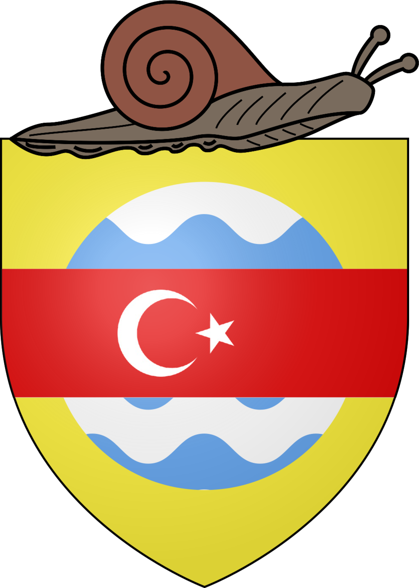
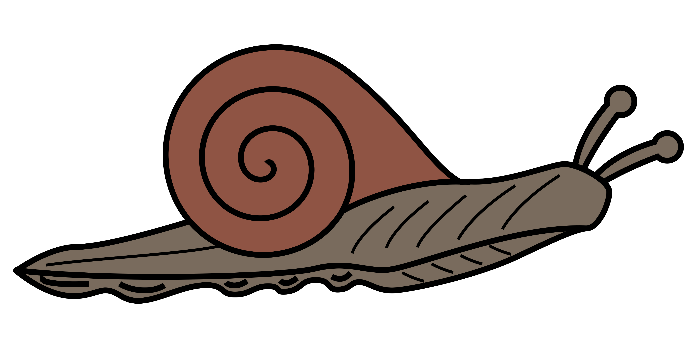

Kalkandaki beyaz ve mavi sular, Murat Ağca 300⅂ Kanalı'nı; kırmızı fes üzerine ay yıldız, bağımlı olduğumuz ülke Türkiye'yi; üstteki heliks ise küčük armamızı temsil edär.

Küčük armamız bir helikstir ve ülkenin ana nüfusunu temsil edär.